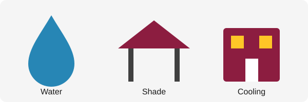

Phoenix Community Heat Resources
During extreme heat, access to cool spaces, drinking water, and reliable information can help residents stay safe.
Cooling Locations
Public cooling locations may offer indoor spaces where residents can take a break from the heat. Hours and availability may vary.
Visit the official City of Phoenix website for current city information.
Hydration and Heat Preparation
- Carry drinking water when traveling outdoors.
- Plan outdoor activities around cooler times of day.
- Find indoor places to rest when temperatures rise.
Heat Safety Resources
